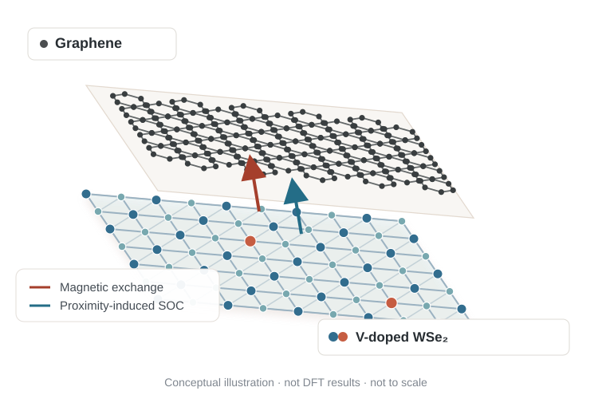
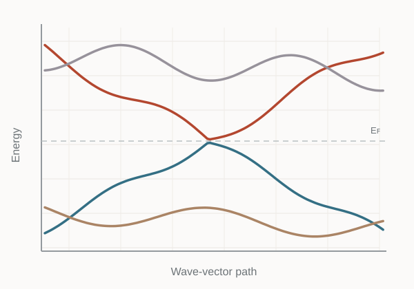

VISUAL ARCHIVE / GALLERY
Materials, models & scientific visuals.
Conceptual artwork and diagrams now; original research figures can be added separately after their reuse rights and research release are confirmed.



PUBLISHED FIGURES
A gallery that grows with your work.
As you provide figures from your published Ga-doped AlSb, In-doped AlSb, and supercapacitor papers, they can appear on their own project pages and here with correct figure captions, source publication, and reuse permissions.